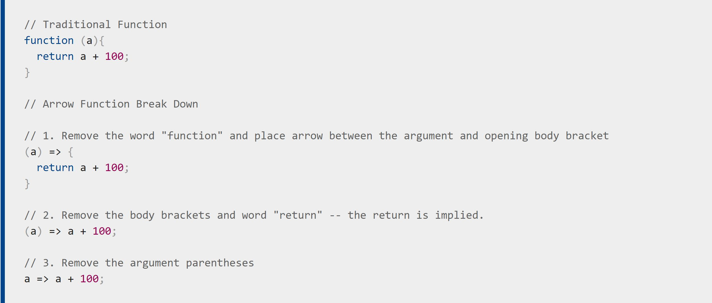

In this sprint I practiced hands on coding with Java Script, using various methods and functions.
A Simple Problem Solved In a Simple Way!
When I was doing the Kata practices which are Java Script coding practices, I got stuck, simply because that I was not familiar with the methods that I had to use for those particular practices. There were two methods that I needed to learn, one called the .map() method and the other one called .this method. I found the explanation of what these are used for and how to use them confusing and it required some extra Googling and researching as I was finding most of the resources online unhelpful. This took me a while to really understand what these methods are and how to use them.
My approach for solving this problem was mostly Googling and trying to find good learning resources, I found the Mozilla developer's website most helpful especially with the .this method and the arrow function explanations. The next thing I did was explain the problem as if I was talking to someone else, which is also known as the Rubber Duck technique. This helped me to understand where the error was and fix it after multiple attempts. This was a long, time consuming process but I finally managed to solve it.
An arrow function expression is a compact alternative to a traditional function expression, but is limited and can't be used in all situations

Here is how Mozilla layed out what an arrow function is with an example. I found this explanation the most helpful one available online.
Other Problem Solving Techniques and How Confident I Feel about Using Them
I've used various problem solving techniques since I began foundations. These techniques are:
Pseudocode: Writing down the steps that you're going to take to solve a problem is a useful method that I use with including what tag or syntax I'm going to use in each step. I have experience using this technique as I used it a lot when I was studying at Ara.
Trying something: This is my very first approach until I get really stuck and I realize that I need to try a different approach. Sometimes I spend a lot of time on trying things which I don't think is very helpful.
Rubber ducky method: A very helpful method when I get realy stuck! It's interesting how you can come to know what's not working correctly once you try to explain it to a rubber duck!
Console.logging: I wasn't able to use this method much as I was doing the practices on repl.it website and the only available console there is the built in console of the website.
Googling: My favourite! I really admire the people who freely shared their knowledge and experiences online so that people like me can use it today.
Asking coaches for help: My facilitator and the coaches are really good, they kindly helped me out whenever I asked for help and given the level of knowledge and experience they have it was more likely to get a problem solved with their help rather than my other peers.
Asking your peers for help: I have asked for help with one of the kata exercises on the slack channel and people have kindly helped me out. I hope that I can return their kindness one day.
Improving your process with reflection: As I make progress I make notes which helps me to process and reflect later on what I learnt. This is also helpful for me to remember the stuff I learnt or how I solved a problem before.